Multi-degree of freedom systems
So far we have covered, in reasonable detail, the dynamics of single and two DoF mass-spring systems. Whilst some physical systems accept this simple representation, for example isolated machinery or the vented loudspeaker, most require models of much greater complexity, including many DoFs. Indeed, real systems with distributed physical properties (mass/stiffness) are said to have \(\infty\) DoFs. Using techniques such as the Finite Element Method we are able to approximate such contiuous systems by lumping together mass and stiffness behaviour to form finite number of DoFs. An example of this is shown in Figure 1, where a continuous rod with varying geometry is approximated by a discrete mass-spring system.
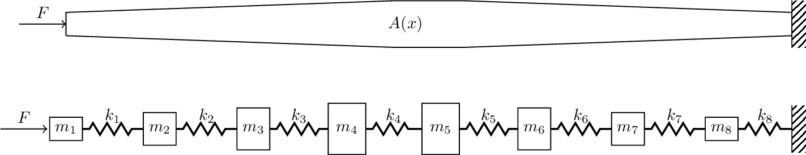
The long and short of it is that the modelling of real world systems inevitably involves the analysis of complex, but discrete, multi-DoF systems. And so on this page, we look to generalise some of the concepts and ideas previously covered to arbitrary multi-DoF systems.
Equations of motion
In general, the Equation of Motion (EoM) of an \(N\) DoF (linear and time invariant) system can be written in matrix form as, \[ \mathbf{M} \ddot{\mathbf{x}}(t) + \mathbf{C} \dot{\mathbf{x}}(t) + \mathbf{K} \mathbf{x}(t) = \mathbf{F}(t) \tag{1}\] where \(\mathbf{M}, \,\mathbf{C},\, \mathbf{K} \in \mathbb{R}^{N\times N}\) are the mass, damping and stiffness matrices. The \(\in \mathbb{R}^{N\times N}\) bit at the end basically just says that these matrices are real valued and of size \(N\times N\). The acceleration, velocity and displacement of each DoF is given by the \(N\) dimensional real vectors \(\ddot{\mathbf{x}}, \, \dot{\mathbf{x}},\,\mathbf{x}\in \mathbb{R}^{N}\). Lastly, \(\mathbf{F} \in \mathbb{R}^{N}\) denotes the vector of external force, also \(N\) dimensional, also real valued.
For real continuous systems, the mass, damping and stiffness matrices above can be obtained using the Finite Element Method [Add reference here]. For discrete mass-spring systems, we can construct these by hand!
In general, these system matrices are quite sparse, containing mostly zeros and usually reciprocal, meaning for example that \(\mathbf{K}^{\rm T} = \mathbf{K}\). In the special case that the system being represented is indeed a discrete mass-spring system (as opposed to a continuous one that has been discretised), the mss matrix \(\mathbf{M}\) is diagonal, meaning that the EoMs are inertially uncoupled. The stiffness \(\mathbf{K}\) and damping \(\mathbf{C}\) matrices however, will always have off-diagonal terms, meaning that out EoMs are elastically and viscously coupled.
Building system matrices
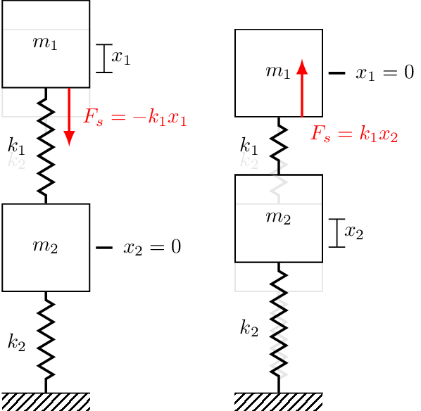
Whilst is is beyond the scope of this page to introduce the Finite Element method in any real detail, it is useful to introduce a means of quickly building the system matrices for mass spring systems without having to go through every mass, draw a free-body diagram and start writing out all the forces. We want a quick, programmatic, way of building these EoM. To do that we are going to return to a two DoF system to build a little intuition before generalising to any system we like.
The trickiest part of writing Newton’s 2nd law is making sure we ge the spring and damper forces all in the right direction. We do this by displacing each mass in turn, and imagining in what direction the restoring force acts. For example, considering mass 1 in Figure 2. We first displace mass 1 upwards by some amount \(x_1\) whilst keeping mass 2 fixed. Clearly, the spring \(k_1\) will act to pull the mass back down, hence the spring force is \(-k_1 x_1\). Let us now keep mass 1 fixed and instead displace mass 2 upwards by some amount \(x_2\). The spring \(k_1\) is now in compression, and as a result with push on mass 1 with an upwards force, \(k_1 x_2\). With the above in mind, the Newton’s 2nd law for mass 1 takes the form, \[ \begin{align} m_1\ddot{x} _1&= \sum_i F_i\\ &= F_{e_1} -k_1x_1 + k_1x_2 \end{align} \] Rearranging to isolate the external force yields our EoM as, \[ F_{e_1} = m_1\ddot{x}_1 + k_1 (x_1-x_2) \]
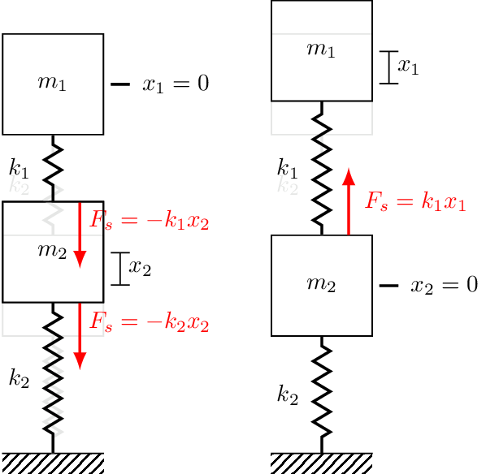
We can now repeat this process for mass 2 using Figure 3. We first displace mass 2 and observed that both \(k_1\) and \(k_2\) develop forces that push/pull mass 2 downwards. Each spring contirbutes a force, and so the total force is \(-k_1 x_2 - k_2 x_2\). Next we displace mass 1 upwards, which generates an upwards pulling force on mass 2, \(k_1x_1\). Now Newton’s 2nd law for mass 2 is, \[ \begin{align} m_2\ddot{x} _2&= \sum_i F_i\\ &= F_{e_2} -k_1x_2 - k_2 x_2 + k_1 x_1 \end{align} \] and its EoM is given by, \[ \begin{align} F_{e_1} &= m_1\ddot{x}_1 + k_1 (x_2-x_1) + k_2 x_2\\ & = m_1\ddot{x}_1 + (k_1+k_2)x_2 -k_1x_1 \end{align} \]
Notice from the above that when a mass is displaced its connected springs impart a negative restoring force (i.e. to bring it back to equilibrium), whilst when a neighboring mass is displaced a positive force is developed. This asymmetry can be seen in the EoM, \[ \begin{align} F_{e_1} &= m_1\ddot{x}_1 + k_1 (x_1{\color{orange}-x_2})\\ F_{e_2} & = m_2\ddot{x}_2 + (k_1+k_2)x_2 {\color{orange}-k_1x_1} \end{align} \] where the coupling terms are always negative. In matrix form, the off-diagonal stiffness terms are always negative whilst the diagonal terms are always positive, \[ \left(\begin{array}{c} F_{e_1} \\ F_{e_2} \end{array}\right) = \left[\begin{array}{cc} m_1 & 0 \\ 0 & m_2 \end{array}\right] \left(\begin{array}{c} \ddot{x}_1 \\ \ddot{x}_2 \end{array}\right) + \left[\begin{array}{cc} k_1 & -k_1 \\ -k_1 & k_1+k_2 \end{array}\right]\left(\begin{array}{c} {x}_1 \\ {x}_2 \end{array}\right) \] Now, with the above in mind we can readily construct stiffness matrices or arbitary mass-spring systems. All we need to do is remember that:
The \(n\)th diagonal of \(\mathbf{K}\) is simply the sum of all spring stiffness connected to mass \(n\)
If mass \(m\) is connected to mass \(n\) via a spring, its negative stiffness goes into the \(mn\) and \(nm\) entries of \(\mathbf{K}\).
The exact same notion can be applied to the damping terms and used to build \(\mathbf{C}\). As said before, for a discrete mass-sopring system the mass matrix is just diagonal with the mass of mass \(n\) in the \(n\)th diagonal of \(\mathbf{M}\). In case you need a little more convincing, shown in Figure 4 are three different 3-DOF systems, the sitffness matrices for which are given by, \[ \mathbf{K} = \left[\begin{array}{c c c} k_1+k_2 & -k_2 & 0 \\ -k_2 & k_2+k_3 & -k_3 \\ 0& -k_3 & k_3+k_4 \\ \end{array}\right], \quad \left[\begin{array}{c c c} k_1+k_2+k_5 & -k_2 & -k_5 \\ -k_2 & k_2+k_3 & -k_3 \\ -k_5& -k_3 & k_3+k_4 +k_5 \\ \end{array}\right], \quad \left[\begin{array}{c c c} k_1+k_2+k_5 & -k_2 & -k_5 \\ -k_2 & k_2 & 0 \\ -k_5& 0 & k_5 \\ \end{array}\right] \tag{2}\]
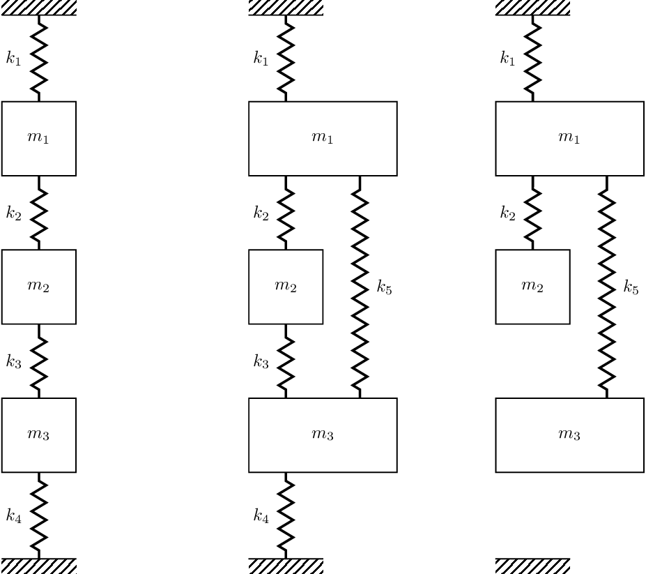
Now that we have a quick and progamatic way of building our system matrices, we want to start thinking about how we can go about solving Equation 1. However, there are some important concepts we might like to introduce first, particularly that of potential and kinetic energy (quadratic forms) and the notion of positive definiteness. These concepts are not really essential for what follows, so I have chucked it into the drop down box below in case you are interested.
The potential energy of an ideal spring given its final displacement \(x_f\) takes the form, \[ \begin{align} V = \int_0^{-x_f} F_s dx &= \int_0^{x_f} kx dx \\ &=\frac{1}{2} kx^2_f = \frac{1}{2} F_s(x_f) x_f \end{align} \] where we have used \(F_s = -k x\). We see that the potential energy \(V\) is quadratic in \(x_f\), with \(k\) playing role of constant. For multi-DoF system, the total potential energy can be written in a similar quadratic form.
Noting that the potential energy depends only on displacement, for each mass we can write, \[ V_i = \frac{1}{2} F_i x_i \] For system with \(N\) masses the total potential energy is just sum of each mass’s potential energy, \[ V = \sum_i^N V_i = \frac{1}{2} \sum_i^N F_i x_i \tag{3}\] Now, in the absence of any external forces, the total force acting on \(m_i\) is due to the displacement of all directly connected masses and can be written generally as, \[ F_i = \sum_j^N k_{ij} x_j \tag{4}\] Combining Equation 4 and Equation 3 above we have for the total potential energy of the system, \[ V = \frac{1}{2} \sum_i^N \left( \sum_j^N k_{ij} x_j \right) x_i = \frac{1}{2} \sum_i^N \sum_j^N k_{ij} x_j x_i \] where \(k_{ij}\) are simply the elements of the stiffness matrix \(\mathbf{K}\). We can write this in a more convenient matrix form, \[ V = \frac{1}{2} \mathbf{x}^{\rm T} \mathbf{K} \mathbf{x} \tag{5}\] where it is noted that \(V\) remains a scalar term and that the form of Equation 5 is known as a quadratic form; the matrix equivalent of a quadratic equation.
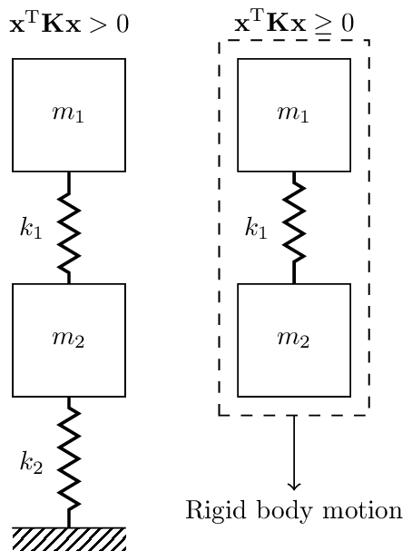
Moving on to the kinetic energy now. The kinetic energy of a mass depends on its mass and velocity, \[ T_i = \frac{1}{2} m_i\dot{x}_i^2 \] Like the potential energy, the total kinetic energy (also a scalar quantity) is simply the sum of all the individual mass energies, \[ T = \frac{1}{2} \sum_i^N m_i\dot{x}_i^2 \] which can also be written in quadratic form, \[ T = \frac{1}{2} \mathbf{\dot{x}}^{\rm T} \mathbf{M}\mathbf{\dot{x}} \]
On physical grounds, the kinetic energy \(T\) should always be positive. Hence, for any velocity vector \(\mathbf{\dot{x}}\), we should have that \(\mathbf{\dot{x}}^{\rm T} \mathbf{M}\mathbf{\dot{x}}>0\). A matrix that satisfies this inequality is said to be positive-definite.
Similarly, \(V\) should always be positive or zero for a given displacement \(\mathbf{x}\). That is, for any displacement vector \(\mathbf{x}\), we should have that \(\mathbf{x}^{\rm T} \mathbf{K} \mathbf{x}\geq 0\). A matrix that satisfies this inequality is said to be positive-semi-definite. A positive value indicates that a deformation of the system which incurs some potential energy. A zero value suggests that there is some set of displacements \(\mathbf{x}\) that does not cause any deformation of the system, hence zero potential energy. This occurs when the system is not rigidly constrained and is able to move entirely as a single rigid body. An example of this is illustrated in Figure 5.
Decoupling equations of motion
In general, the coupling within an EoM depends on the coordinates used to describe the problem. We have already seen that if we use Cartesian/positional coordinates (i.e. the displacement \(\mathbf{x}\)), our equations are elastically and viscously coupled through the off-diagonal terms in \(\mathbf{K}\) and \(\mathbf{C}\). We are interested in choosing some alternative set of coordinates that uncouple our EoM, i.e. they make \(\mathbf{K}\) and \(\mathbf{C}\) both diagonal.
Lets begin by considering the undamped (\(\mathbf{C}=\mathbf{0}\)) EoM, \[ \mathbf{M}\ddot{\mathbf{x}}(t) + \mathbf{K}\mathbf{x}(t) = \mathbf{F}(t) \] In general, an arbitrary change of coordinates can be represented by linear transformation of the form, \[ \mathbf{x}(t) = \mathbf{U}\mathbf{q}(t) \quad \quad x_i = \sum_j^N U_{ij} q_j \tag{6}\] where \(\mathbf{U}\) is a constant matrix called a transformation matrix, and \(\mathbf{q}\) are the new set of transformed coordinates. Equation 6 states that the physical displacements can be expressed as a linear combination of transformed coordinates, each weighted by an appropriate element of \(\mathbf{U}\). With \(\mathbf{U}\) being a constant matrix, we also have for the velocity and acceleration, \[ \dot{\mathbf{x}}(t) = \mathbf{U}\dot{\mathbf{q}}(t) \quad \quad \ddot{\mathbf{x}}(t) = \mathbf{U}\ddot{\mathbf{q}}(t) \]
Let us now substitute our coordinate transformation (Equation 6) into the EoM, \[ \mathbf{M}\ddot{\mathbf{x}}(t) + \mathbf{K}\mathbf{x}(t) = \mathbf{F}(t) \quad \quad \rightarrow \quad \quad \mathbf{M}\mathbf{U}\ddot{\mathbf{q}}(t)+ \mathbf{K}\mathbf{U}\mathbf{q}(t)= \mathbf{F}(t) \tag{7}\] Next, we pre-multiply both sides of Equation 7 by \(\mathbf{U}^{\rm T}\), \[ \underbrace{\mathbf{U}^{\rm T}\mathbf{M}\mathbf{U}}_{\mathbf{\tilde{M}}} \ddot{\mathbf{q}}(t)+ \underbrace{\mathbf{U}^{\rm T}\mathbf{K}\mathbf{U}}_{\mathbf{\tilde{K}}}\mathbf{q}(t)= \underbrace{\mathbf{U}^{\rm T}\mathbf{F}(t)}_{\mathbf{Q}(t)} \]{eq-EoMCoordTran2} where \(\mathbf{\tilde{M}}\) and \(\mathbf{\tilde{K}}\) are termed the transformed mass and stiffness matrices and \(\mathbf{Q}(t)\) the generalised forces. In terms of the transformed coordinates \(\mathbf{q}\), our EoM now takes the form, \[ \mathbf{\tilde{M}}\ddot{\mathbf{q}}(t) + \mathbf{\tilde{K}}\mathbf{q}(t) = \mathbf{Q}(t) \] With decoupling our EoM in mind, we want to choose a transformation matrix \(\mathbf{U}\) that makes both \(\mathbf{\tilde{M}}\) and \(\mathbf{\tilde{K}}\) diagonal, simultaneously. This would have the effect of decoupling our EoMs, giving us for each coordinate, \[ \tilde{M}_j \ddot{q}_j(t) + \tilde{K}_{j}q_j(t) = Q_j(t) \] which is just the EoM of an undamped SDOF oscillator! We already know how to solve equations of this form.
Spoiler alert - we will see shortly that the transformation sought is just the matrix of modal vectors, \[ \mathbf{U} = \left[\begin{array}{c c c c} \mathbf{u}_1 & \mathbf{u}_2 & \cdots & \mathbf{u}_N \end{array}\right] \] The coordinates \(\mathbf{q}\) are then known as the natural or principal coordinates. This method of analysis is widely referred to as modal analysis.
Synchronous motion
We are claiming above that, in the absence of damping, the EoM can be decoupled by using the modal matrix \(\mathbf{U}\) as a coordinate transformation. To prove this we must first determine the modal matrix. This is done by considering the force free problem, \[ \mathbf{M}\ddot{\mathbf{x}}(t) + \mathbf{K}\mathbf{x}(t) = \mathbf{0} \tag{8}\] As for the TDoF case on the previous page, we are interested in synchronous motion. That is, solutions to Equation 8 where all displacements have the same time dependence. Mathematically, \[ \mathbf{x}(t) = \mathbf{u} g(t) \quad \quad x_i(t) = u_i g(t) \tag{9}\] where \(\mathbf{u}\) describes the configuration of the system, and \(g(t)\) its time dependence.
Assuming synchronous motion, i.e. substituting Equation 9 into our EoM, we have that \[ \mathbf{M} \mathbf{u} \ddot{g}(t)+ \mathbf{K} \mathbf{u} g(t)= \mathbf{0} \quad \quad\mbox{or} \quad \quad \ddot{g}(t) \sum_j^N M_{ij} u_j + g(t) \sum_j^N K_{ij} u_j = 0 \quad \mbox{for}\quad i=1,\, 2, \, \cdots, \, N \tag{10}\] We can rewrite the element-wise form of Equation 10 for each of the \(N\) DoFs as, \[ -\frac{\ddot{g}(t)}{g(t)} = \frac{\sum_j^N K_{ij} u_j }{ \sum_j^N M_{ij} u_j } \quad \quad \mbox{for } i=1,\, 2, \, \cdots, \, N \tag{11}\] Note that the left hand side of Equation 11 does not depend on cooridnste index \(i\), nor does the right hand side depend on time \(t\). From this we conclude that the two ratios can only be equal if they are themselves equal to a constant, defined here as \(\lambda_i\).
From the above we can establish the follow equations, \[ \ddot{g}(t) + \lambda_i g(t) = 0 \tag{12}\] \[ \sum_j^N (K_{ij} - \lambda M_{ij})u_j = 0 \quad \quad \mbox{for } i=1,\, 2, \, \cdots, \, N \] which are very similar to what we had previously for our TDOF system.
Lets solve Equation 12 first, which is trival as this point as we have already dealt with this form of SDOF equation several times. The solution has the form \(g(t) = Ae^{st}\), from which we obtain from Equation 12, \[ s^2+\lambda_i = 0\quad \quad s = \pm \sqrt{-\lambda_i} \] If \(\lambda_i<0\) then \(s\) is real and the solution is made up of one decaying and one growing exponential. This is not a synchronous oscillation. So, we must consider case \(\lambda_i>0\), which is ensured by defining \(\lambda_i =\omega_i^2\). Our solution then takes the form, \[ g(t) = A_1 e^{-i \omega_i t} + A_2 e^{i\omega_i t} \quad \mbox{or} \quad g(t) = C \cos(\omega_i t - \phi) \tag{13}\] from which we conclude that if synchronous motion is possible, its time dependence will be harmonic at frequency \(\omega_i\)
With Equation 13 in hand, our synchronous EoM becomes, \[ \mathbf{M} \mathbf{u} \ddot{g}(t)+ \mathbf{K} \mathbf{u} g(t)= \mathbf{0} \quad \quad \rightarrow \quad \quad -\omega_i^2 \mathbf{M} \mathbf{u}+ \mathbf{K} \mathbf{u} = \mathbf{0} \] Written in a slightly different form we have that, \[ \left( \mathbf{K}-\omega_i^2 \mathbf{M}\right) \mathbf{u} = \mathbf{0} \quad \quad \mbox{or} \quad \quad \omega_i^2 \mathbf{M} \mathbf{u} =\mathbf{K} \mathbf{u} \tag{14}\] This equation does not permit a solution for any value of \(\omega_i\), only particular values are valid of which there are \(N\). Finding the values of \(\omega_i\) is called characteristic/eigenvalue problem.
To find the characteristic values of Equation 14 we note that \(\left(\mathbf{K}-\omega^2 \mathbf{M}\right) \mathbf{u} = \mathbf{0}\) only has non-trivial solutions if the determinant of the bracketed matrix goes to 0 (we justified this requirement on the previous page!), \[ \mbox{det}\left( \mathbf{K}-\omega^2 \mathbf{M} \right) = 0 \tag{15}\] Equation 15 is a polynomial of degree \(N\) in \(\omega^2\), and has \(N\) distinct roots. These roots are the characteristic/eigenvalues \(\omega_r \quad r = 1,\, 2, \, \cdots ,\, N\). Associated with each \(\omega_r\) (previously denoted \(\omega_i\)) is a unique vector \(\mathbf{u}_r\) whose elements define the relative motion of the cooridnates - these are the so-called modal vectors, \[ \left( \mathbf{K}-\omega_r^2 \mathbf{M}\right) \mathbf{u}_r = \mathbf{0} \tag{16}\]
Orthogonality and mass normalisation of mode shapes
The natural modes possess a very important and useful property - orthogonality. It is the orthogonality of the mode shapes that leads to the decoupling of our EoM.
Conventional orthogonality means that the inner product of two vectors is equal to zero, \(\mathbf{x}^{\rm T} \mathbf{y} = 0\). The orthogonality of the natural modes is slightly different. We say that they are orthogonality with respect to the mass and stiffness matrices, meaning, \[ \mathbf{u}_s^{\rm T} \mathbf{M} \mathbf{u}_r = 0 \quad \mbox{and} \quad \mathbf{u}_s^{\rm T}\mathbf{K}\mathbf{u}_r = \mathbf{0} \quad \quad \mbox{for} \quad r\neq s \tag{17}\] We proved this fact on the previous page for a two DOF system. If you recall, it involved quite a lot of algebra… A more general `proof’, which requires some tricks from linear algebra, is detailed in the box below. I say ‘proof’ as we will use some linear algebra relations without explicitly proving them. If you are happy to accept Equation 17 on face value, feel free to skip the box enitrely!
To prove that the mode shapes are indeed orthogonal with respect to the mass and stiffness matrices let us consider 2 distinct solutions (\(\omega_r^2, \, \mathbf{u}_r\)) and (\(\omega_s^2, \, \mathbf{u}_s\)), each of which satisfy Equation 16, \[ \mathbf{K}\mathbf{u}_r = \omega_r^2\mathbf{M} \mathbf{u}_r \tag{18}\] \[ \mathbf{K}\mathbf{u}_s = \omega_s^2\mathbf{M} \mathbf{u}_s \tag{19}\] We beging by pre-multiplying Equation 18 by \(\mathbf{u}_s^{\rm T}\) and Equation 19 by \(\mathbf{u}_r^{\rm T}\), \[ \mathbf{u}_s^{\rm T}\mathbf{K}\mathbf{u}_r = \omega_r^2 \mathbf{u}_s^{\rm T}\mathbf{M} \mathbf{u}_r \tag{20}\] \[ \mathbf{u}_r^{\rm T}\mathbf{K}\mathbf{u}_s = \omega_s^2\mathbf{u}_r^{\rm T}\mathbf{M} \mathbf{u}_s \tag{21}\] Next, we transpose Equation 20 and subtract it from Equation 21 (noting that the stiffness and mass matrices are reciprocal, i.e. \(\mathbf{K}=\mathbf{K}^{\rm T}\) and \(\mathbf{M}=\mathbf{M}^{\rm T}\)), \[ 0 = (\omega_s^2 - \omega_r^2) \mathbf{u}_s^{\rm T} \mathbf{M} \mathbf{u}_r \] Now, its time to call on a useful fact from linear algebra. For almost all \(N\times N\) matrices, it is the case that its \(N\) eigenvalues are distinct, i.e. \(\omega_s^2 \neq \omega_r^2\). We won’t prove this here, but you can have a google of it if you want to know more. Using this fact, we conclude that, \[ \mathbf{u}_s^{\rm T} \mathbf{M} \mathbf{u}_r = 0 \quad \quad \mbox{for} \quad r\neq s \] This is our orthogonality with respect to the mass matrix \(\mathbf{M}\)!
Now, recalling Equation 20, \[ \mathbf{u}_s^{\rm T}\mathbf{K}\mathbf{u}_r = \omega_r^2 \overbrace{\mathbf{u}_s^{\rm T}\mathbf{M} \mathbf{u}_r}^{=0} \] we see immediately that \(\mathbf{u}_r\) and \(\mathbf{u}_s\) are also orthogonal with respect to the stiffness matrix \(\mathbf{K}\), \[ \mathbf{u}_s^{\rm T}\mathbf{K}\mathbf{u}_r = 0 \quad \quad \mbox{for} \quad r\neq s \]
Taking instead the inner product of mode shape \(\mathbf{u}_r\) with itself we have, \[ \mathbf{u}_r^{\rm T} \mathbf{M} \mathbf{u}_r \neq 0 \quad \quad \mathbf{u}_r^{\rm T} \mathbf{K} \mathbf{u}_r \neq 0 \quad \quad \mbox{for } r=1,\, 2, \, \cdots, \, N \] where, on account of the modal vectors \(\mathbf{u}_r\) only being unique up to a scalar multiple (meaning that if \(\mathbf{u}_r\) is a solution, so is \(\alpha \mathbf{u}_r\)), the right hand sides are not well defined. It is therefore convenient to make \(\mathbf{u}_r\) unique by normalising it some way. As we will see, a particularly useful normalisation is so-called mass normalisation where the elements of \(\mathbf{u}_r\) are normalised such that, \[ \mathbf{u}_r^{\rm T} M_r \mathbf{u}_r = 1 \quad \quad \mbox{for } r=1,\, 2, \, \cdots, \, N \] where \(M_r\) is the \(r\)th diagonal element of the mass matrix \(\mathbf{M}\).
The benefit of this particular normalisation is clear if we pre-multiply Equation 16 by \(\mathbf{u}_r^{\rm T}\), \[ \mathbf{u}_r^{\rm T} \left( \mathbf{K}-\omega_r^2 \mathbf{M}\right) \mathbf{u}_r = \mathbf{u}_r^{\rm T}\mathbf{K}\mathbf{u}_r - \omega_r^2 = {0} \] as we see immediately that, \[ \mathbf{u}_r^{\rm T}\mathbf{K}\mathbf{u}_r = \omega_r^2 \]
By combining all the mass normalised natural modes to build the modal matrix, \[ \mathbf{U} = \left[\begin{array}{c c c c} \mathbf{u}_1 & \mathbf{u}_2 & \cdots & \mathbf{u}_N \end{array}\right] \] we are able to diagonalize the mass and stiffness matrices \(\mathbf{M}\) and \(\mathbf{K}\), \[ \mathbf{U}^{\rm T} \mathbf{M} \mathbf{U} = \mathbf{I} \quad \quad \mathbf{U}^{\rm T} \mathbf{K} \mathbf{U} = \mathbf{\Omega} \quad \quad \mbox{with} \quad \quad \mathbf{\Omega} \left[\begin{array}{cccc} \omega_1^2 & && \\ & \omega_2^2 && \\ & &\ddots &\\ &&& \omega_N^2 \end{array}\right] \] By diagonalising the mass and stiffness matrices, we are effectively decoupling our EoM! Recalling Equation 6 and its surrounding discussion, this is exactly what we have been looking for; a transformation matrix \(\mathbf{U}\) that simultaneously diagonalises the mass and stiffness matrices! As we have just seen, the modal shape matrix is exactly what we are looking for.
Wait, what just happened?
In summary, by using the mode shape matrix \(\mathbf{U}\) as a coordinate transformation as per Equation 6, \[ \mathbf{x}(t) = \mathbf{U}\mathbf{q}(t) \tag{22}\] we are able to diagonalise our mass and stiffness matrices, \[ \underbrace{\mathbf{U}^{\rm T}\mathbf{M}\mathbf{U}}_{\mathbf{\tilde{M}}} \ddot{\mathbf{q}}(t)+ \underbrace{\mathbf{U}^{\rm T}\mathbf{K}\mathbf{U}}_{\mathbf{\tilde{K}}}\mathbf{q}(t)= \underbrace{\mathbf{U}^{\rm T}\mathbf{F}(t)}_{\mathbf{Q}(t)} \] which effectively uncouples our EoM giving us \(N\) independent SDOF EoMs, \[ \mathbf{\tilde{M}}\ddot{\mathbf{q}}(t) + \mathbf{\tilde{K}}\mathbf{q}(t) = \mathbf{Q}(t)\quad \quad\mbox{or} \quad \quad \tilde{M}_j \ddot{q}_j(t) + \tilde{K}_{j}q_j(t) = Q_j(t) \] which we can solve for the modal coordinates \(q_j(t)\) using our SDOF techniques from earlier. After solving each modal EoM, we can reconstruct the solution in the physical coordinates by substituting our modal solution \(\mathbf{q}(t)\) into our initial coordinate transformation in Equation 22. With this approach we have completely avoided having to solve any coupled EoMs!
Unforced solution
Okay, time to use our modal decoupling to actually solve some equations. We will start, as usual, with the simplified undamped and unforced case. Our EoM is then, \[ \mathbf{M}\ddot{\mathbf{x}}(t) + \mathbf{K}\mathbf{x}(t) = \mathbf{0} \] Given the mass and stiffness matrices \(\mathbf{M}\) and \(\mathbf{K}\) we can set up the eigenvalue problem, \[ \left( \mathbf{K}-\omega_r^2 \mathbf{M}\right) \mathbf{u}_r = \mathbf{0} \quad \quad \mbox{or} \quad \quad \left( \mathbf{K}-\mathbf{\Omega}^2 \mathbf{M}\right) \mathbf{U} = \mathbf{0} \tag{23}\] Solving Equation 23 (i.e. finding natural frequencies \(\mathbf{\Omega}\) and mode shape matrix \(\mathbf{U}\)) by hand is generally not possible, but efficient algorithms are available in MATLAB/python/etc. Once we have \(\mathbf{\Omega}\) and \(\mathbf{U}\) (don’t forget mass normalisation step) we can transform to modal coordinates using \(\mathbf{x}(t) = \mathbf{U}\mathbf{q}(t)\) and \(\mathbf{\ddot{x}}(t) = \mathbf{U}\mathbf{\ddot{q}}(t)\). \[ \mathbf{M} \mathbf{U}\mathbf{\ddot{q}}(t) + \mathbf{K} \mathbf{U}\mathbf{{q}}(t) = \mathbf{0}\quad \rightarrow \quad \underbrace{\mathbf{U}^{\rm T} \mathbf{M} \mathbf{U}}_{\mathbf{I}}\mathbf{\ddot{q}}(t) + \underbrace{\mathbf{U}^{\rm T}\mathbf{K} \mathbf{U}}_{\mathbf{\Omega}}\mathbf{{q}}(t) = \mathbf{0} \] We now have \(N\) uncoupled (SDOF) EoMs of the form, \[ \mathbf{\ddot{q}}(t) + \mathbf{\Omega}\mathbf{q}(t) = \mathbf{0} \quad \quad \mbox{or} \quad \quad \ddot{q}_r(t) + \omega^2_r q_r(t) = 0 \quad \quad \mbox{for}\quad r=1,\, 2, \, \cdots, \, N \] which we know have a solution of the form \(q_r(t) = A_r \cos(\omega_r t - \phi_r)\). What’s left to do is find modal amplitude \(A_r\) and phase \(\phi_r\) terms given some set of initial conditions in the physical coordinates.
To do so we recall that the total solution is obtained by recombining SDOF solutions, \[ \begin{align} \mathbf{x}(t) &= \mathbf{U}\mathbf{q}(t)\\ & = \sum_r^N q_r(t) \mathbf{u}_r = \sum_r^N A_r \mathbf{u}_r\cos(\omega_r t -\phi_r) \end{align} \] At \(t=0\) the initial displacement and velocity (\(\mathbf{x}_0\) and \(\dot{\mathbf{x}}_0\)) become, \[ \mathbf{x}(0) = \sum_r^N A_r \mathbf{u}_r\cos(\phi_r) \quad \quad \dot{\mathbf{x}}(0) = \sum_r^N \omega_r A_r \mathbf{u}_r\sin(\phi_r) \] Now lets pre-multiply by the mode shape and mass matrix \(\mathbf{u}^{\rm T}_s\mathbf{M}\), and use the orthogonality relation \(\mathbf{u}_s\mathbf{M}\mathbf{u}_r = 0\) for \(r\neq s\), \[ \begin{align} \mathbf{u}^{\rm T}_s\mathbf{M} \mathbf{x}_0 &= \sum_r^N A_r \mathbf{u}^{\rm T}_s\mathbf{M}\mathbf{u}_r\cos(\phi_r) = {\color{red} A_r \cos(\phi_s) } \\ \frac{1}{\omega_r} \mathbf{u}^{\rm T}_s\mathbf{M}\mathbf{\dot{x}}_0 &= \sum_r^N A_r \mathbf{u}^{\rm T}_s\mathbf{M}\mathbf{u}_r\sin(\phi_r)= {\color{green}A_r \sin(\phi_s)} \end{align} \tag{24}\] We see that orthogonality removes the summation and reduces \(\mathbf{x}_0\) and \(\dot{\mathbf{x}}_0\) to just a single \(\cos\) and \(\sin\) term.
Now lets return to our solution, \(\mathbf{x}(t) = \sum_r^N A_r \mathbf{u}_r\cos(\omega_r t -\phi_r)\) and rewrite it with a little trigonometric flair..! Specifically using, \(\cos(\alpha-\beta) = \cos\alpha\cos\beta+\sin\alpha\sin\beta\), \[ \mathbf{x}(t) =\sum_r^N A_r \mathbf{u}_r\cos(\omega_r t - \phi_r) = \sum_r^N A_r \mathbf{u}_r \left(\cos\omega_r t\, {\color{red}\cos\phi_r} +\sin\omega_r t\,{\color{green}\sin\phi_r}\right) \] After substituting in our IC from above, our system response, due to \(\mathbf{x}_0\) and \(\dot{\mathbf{x}}_0\), becomes, \[ \begin{align} \mathbf{x}(t) &= \sum_r^N A_r \mathbf{u}_r \left(\cos\omega_r t \,{\color{red}\cos\phi_r} + \sin\omega_r t \,{\color{green}\sin\phi_r}\right) \\ &= \sum_r^N \mathbf{u}_r \left({\color{red} \mathbf{u}^{\rm T}_r\mathbf{M} \mathbf{x}_0 } \cos\omega_r t +{\color{green} \frac{1}{\omega_r} \mathbf{u}^{\rm T}_r\mathbf{M}\dot{\mathbf{x}}_0} \sin\omega_r t\right) \end{align} \tag{25}\] Equation 25 indicates that for an arbitrary set of IC, the system will oscillate in a superposition of all mode shapes. The highlighted terms \({\color{red}\mathbf{u}^{\rm T}_r\mathbf{M}\mathbf{x}_0 }\) and \({\color{green}\frac{1}{\omega_r}\mathbf{u}^{\rm T}_r\mathbf{M}\mathbf{\dot{x}}_0}\) describe by how much mode \(r\) is excited by the prescribed initial conditions.
From inspection of Equation 25 we can see that if the IC are set to \(\mathbf{x}_0 = \mathbf{u}_s\) and \(\dot{\mathbf{x}}_0 = \mathbf{0}\), i.e. the system is initially displaced into a mode shape configuration and then released, the solution reduces to, \[
\begin{align}
\mathbf{x}(t) = \mathbf{u}_r \cos\omega_r t
\end{align}
\]
i.e. the system will move only with that mode shape.
What about damping?
Right, lets bring damping back into the mix. Our damped, but unforced, EoM is, \[ \mathbf{{M}}\ddot{\mathbf{x}}(t)+ \mathbf{{C}}\dot{\mathbf{x}}(t) + \mathbf{{K}}\mathbf{x}(t) = \mathbf{0} \] Lets substitute our modal transformation \(\mathbf{x}(t) = \mathbf{U} \mathbf{q}(t)\) into Equation 30 and pre-multiply by \(\mathbf{U}^{\rm T}\), \[ \mathbf{\tilde{M}}\ddot{\mathbf{q}}(t)+ \mathbf{\tilde{C}}\dot{\mathbf{q}}(t) + \mathbf{\tilde{K}}\mathbf{q}(t) = \mathbf{0} \] By using the mass normalised modes this becomes, \[ \mathbf{I}\ddot{\mathbf{q}}(t)+ \mathbf{\tilde{C}}\dot{\mathbf{q}}(t) + \mathbf{\Omega}\mathbf{q}(t) = \mathbf{0} \] where as expected the mass and stiffness matrices have been diagonalised. Now, a very important point… in general the natural modes do not diagonalise the damping matrix. That is, we cannot viscously uncouple our EoM! To proceed, we must assume a special type of damping termed proportional damping. A proportional damping matrix is one that is a linear combination of the mass and stiffness matrices. Since both the mass and stiffness matrices are diagonalised byt he natural modes, so to is the propotional damping matrix, \[ \mathbf{C} = \alpha \mathbf{M} + \beta \mathbf{K} \quad \quad \rightarrow \quad \quad \mathbf{\tilde{C}} = \alpha \mathbf{I} + \beta \mathbf{\Omega} \] where the values of \(\alpha\) and \(\beta\) are often obtained from experiment.
If we use this proportional damping model, the modal damping matrix can be written as, \[ \mathbf{\tilde{C}} = \left[\begin{array}{ccc} 2\zeta_1\omega_1 & &\\ & \ddots & \\ & & 2\zeta_N\omega_N \end{array}\right] \quad \quad \mbox{with}\quad \quad \zeta_n = \frac{\alpha/\omega_n + \beta \omega_n}{2} \] and our transformed EoM are now entirely diagonal, taking the form, \[ \mathbf{\ddot{q}}(t) +i\omega \mathbf{\tilde{C}}\dot{\mathbf{q}}(t) +\mathbf{\Omega}\mathbf{q}(t) = \mathbf{0} \quad \quad \mbox{or} \quad \quad \ddot{q}_r(t) + 2\zeta_r\omega_r \dot{q}(t) + \omega^2_r q_r(t) = 0 \quad \quad \mbox{for}\quad r=1,\, 2, \, \cdots, \, N \] We have already dealt with equations of this form in our treatment of the damped SDOF oscillator. For each mode, the solution takes the form, \[ q_r(t) = A_r\cos(\omega_{d,r} t - \phi_r) e^{-\zeta_r\omega_{r} t} \] where the damped modal frequency is given by, \[ \omega_{d,r} = \sqrt{1-\zeta_r^2}\omega_r \] with \(\zeta_r\) being the modal damping coefficient. Based on our treatment of the damped SDOF oscillator, and the undamped multi-DOF solution above, we can derive the following system response based on the initial conditions \(\mathbf{x}_0\) \(\dot{\mathbf{x}}_0\), \[ \begin{align} \mathbf{x}(t) &= \sum_r^N \mathbf{u}_r \left({\color{red}\mathbf{u}^{\rm T}_r\mathbf{M} \mathbf{x}_0 }\, \cos\omega_{d,r} t + {\color{green}\frac{1}{\omega_{d,r} }\mathbf{u}^{\rm T}_r\mathbf{M} \left(\dot{\mathbf{x}}_0 + \zeta_r\omega_{r} \mathbf{x}_0 \right)}\, \sin\omega_{d,r} t \right)e^{-\zeta_r\omega_{r} t} \end{align} \] If you want to see how we got to this equation, the details are in the box below! Its pretty similar to Equation 25, with a few important differences. First of all, the modes oscillate at the damped natural frequencies \(\omega_{d,r}\). Second, we see that the contribution of the initial displacement now also effects the \(\sin\) contribution also. Lastly, we see that each modal contribution decays exponentially according to the modal damping coefficient \(\zeta_r\).
To determine the unknown constants \(A_r\) and \(\phi_r\) we follow a similar procedure as for the undamped case. We begin with the general solution of the damped system, \[ \begin{align} \mathbf{x}(t) = \sum_r^N A_r \mathbf{u}_r\cos(\omega_{d,r} t -\phi_r)e^{-\zeta_r\omega_{r} t} \end{align} \tag{26}\] We will also need an equation for the velocity, so we take the derivative of Equation 26, \[ \begin{align} \dot{\mathbf{x}}(t) = \sum_r^N -\omega_{d,r} A_r \mathbf{u}_r\sin(\omega_{d,r} t -\phi_r)e^{-\zeta_r\omega_{r} t} - \sum_r^N \zeta_r\omega_{r} A_r \mathbf{u}_r\cos(\omega_{d,r} t -\phi_r)e^{-\zeta_r\omega_{r} t} \end{align} \tag{27}\] Evaluating Equation 26 and Equation 27 for \(t=0\) we get, \[ \mathbf{x}_0 = \sum_r^N A_r \mathbf{u}_r\cos(\phi_r) \quad \quad \dot{\mathbf{x}}(0) = \sum_r^N \omega_{d,r} A_r \mathbf{u}_r\sin(\phi_r) - \sum_r^N \zeta_r\omega_{r} A_r \mathbf{u}_r\cos(\phi_r) \tag{28}\] As before we pre-multiply both sides of Equation 28 by \(\mathbf{u}^{\rm T}_s\mathbf{M}\) and use orthogonality! For the initial displacement we get the same results as in Equation 24, \[ \mathbf{u}^{\rm T}_s\mathbf{M} \mathbf{x}_0 = A_r \cos(\phi_r) \] For the initial velocity we have an extra \(\cos\) term to deal with. Pre-multiplying by \(\mathbf{u}^{\rm T}_s\mathbf{M}\), \[ \begin{align} \mathbf{u}^{\rm T}_s\mathbf{M} \dot{\mathbf{x}}_0 = \sum_r^N \omega_{d,r} A_r \mathbf{u}^{\rm T}_s\mathbf{M} \mathbf{u}_r\sin(\phi_r) - \sum_r^N \zeta_r\omega_{r} A_r \mathbf{u}^{\rm T}_s\mathbf{M}\mathbf{u}_r\cos(\phi_r) \end{align} \] and using orthogonality, \[ \begin{align} \mathbf{u}^{\rm T}_r\mathbf{M} \dot{\mathbf{x}}_0 &= \omega_{d,r} A_r \mathbf{u}^{\rm T}_r\mathbf{M} \mathbf{u}_r\sin(\phi_r) - \zeta_r\omega_{r} A_r \mathbf{u}^{\rm T}_r\mathbf{M}\mathbf{u}_r\cos(\phi_r) \\ & = \omega_{d,r} A_r \sin(\phi_r) - \zeta_r\omega_{r} \overbrace{A_r \cos(\phi_r)}^{\mathbf{u}^{\rm T}_s\mathbf{M} \mathbf{x}_0 } \end{align} \] we have that, \[ \frac{1}{\omega_{d,r} }\mathbf{u}^{\rm T}_r\mathbf{M} \left(\dot{\mathbf{x}}_0 + \zeta_r\omega_{r} \mathbf{x}_0 \right) = A_r \sin(\phi_r) \tag{29}\] Applying the trig identity \(\cos(\alpha-\beta) = \cos\alpha\cos\beta+\sin\alpha\sin\beta\) to Equation 26, \[ \begin{align} \mathbf{x}(t) &= \sum_r^N A_r \mathbf{u}_r \left(\cos\omega_{d,r} t \,{\color{red}\cos\phi_r} + \sin\omega_{d,r} t \,{\color{green}\sin\phi_r}\right)e^{-\zeta_r\omega_{r} t} \end{align} \] and substituting in Equation 28 and Equation 29, leaves us with, \[ \begin{align} \mathbf{x}(t) &= \sum_r^N \mathbf{u}_r \left({\color{red}\mathbf{u}^{\rm T}_s\mathbf{M} \mathbf{x}_0 }\, \cos\omega_{d,r} t + {\color{green}\frac{1}{\omega_{d,r} }\mathbf{u}^{\rm T}_r\mathbf{M} \left(\dot{\mathbf{x}}_0 + \zeta_r\omega_{r} \mathbf{x}_0 \right)}\, \sin\omega_{d,r} t \right)e^{-\zeta_r\omega_{r} t} \end{align} \]
Forced solution
Having dealt with the unforced initial value problem above, lets now consider the forced response of a general multi-DoF system. As we have seen for the SDOF and TDOF systems, the forced response (assuming harmonic or periodic forcing) is most conveniently dealt with using the concept of a Frequency Response Function.
The FRF of a system describes the relation between a particular input (in our case, force) and output (displacement). For a multi-DOF system, we require a matrix of FRF elements to fully describe the interaction between all inputs and outputs, \[ \mathbf{X}_0 = \mathbf{R}(\omega) \mathbf{F}_0 \] where \(\mathbf{R}\) is terms the receptance FRF. This FRF matrix is central to solving the forced response, and can be obtained in a number of ways. Below we will describe the two most common approaches; a direct calculation and a modal synthesis.
Once the receptance is known, the complex amplitude can be computed for each harmonic term of one or more external periodic forces. The displacement signal for each mass can then be computed in a similar way as for a SDOF system, \[ \mathbf{x}(t) = |\mathbf{X}_1| \cos(\omega_1 t - \angle{\mathbf{X}_1}) + |\mathbf{X}_2| \cos(2\omega_1 t - \angle{\mathbf{X}_2}) + \cdots = \sum_{n=1}|\mathbf{X}_n| \cos(n \omega_1 t - \angle{\mathbf{X}_n}) \] where \(\mathbf{X}_n = \mathbf{R}(n\omega) \mathbf{F}_n\) is the vector of complex response amplitudes for each mass due to the \(n\)th harmonic of the forcing \(\mathbf{f}(t) = \sum_{n=1} \mathbf{F}_n e^{-i n \omega_1 t}\).
Direct method
Reintroducing our damped EoM, \[ \mathbf{M}\ddot{\mathbf{x}}(t)+ \mathbf{C}\dot{\mathbf{x}}(t) + \mathbf{K}\mathbf{x}(t) = \mathbf{F}(t) \tag{30}\] and taking the external force to be harmonic \(\mathbf{F}(t) = \mathbf{F}_0 e^{i\omega t}\), we know that our response will also be harmonic with the same frequency, \(\mathbf{x}(t) = \mathbf{X}_0 e^{i\omega t}\).
Substituting \(\mathbf{x}(t) = \mathbf{X}_0 e^{i\omega t}\) into Equation 30 and taking the necessary derivatives (\(\ddot{\mathbf{x}}(t)\), \(\dot{\mathbf{x}}(t)\)) we get, \[ \underbrace{\left(-\omega^2 \mathbf{M}+i\omega \mathbf{C}+ \mathbf{K}\right)}_{\mbox{dynamic stiffness } \mathbf{D}(\omega)}\mathbf{X}_0 e^{i\omega t} = \mathbf{F}_0 e^{i\omega t} \] Dividing through by \(e^{i\omega t}\) leaves us with, \[ \mathbf{D}(\omega)\mathbf{X}_0 = \mathbf{F}_0 \tag{31}\] To solve for the response amplitude \(\mathbf{X}_0\) we pre-multiply both sides of Equation 31 by the inverse of the dynamic stiffness matrix, \[ \mathbf{X}_0 = \mathbf{D}(\omega)^{-1} \mathbf{F}_0 = \mathbf{R}(\omega) \mathbf{F}_0 \quad \quad \mathbf{R}(\omega) = \mathbf{D}(\omega)^{-1} \tag{32}\] The resulting FRF matrix \(\mathbf{R}\) is termed the receptance. It is worth noting that taking the inverse of a matrix is not the same as taking the inverse of all of the matrix elements. It is a specific operation akin to rearranging a set of simultaneous equations. For all but the simplest \(2\times 2\) matrices, the matrix inverse is not something you would ever consider doing by hand! Instead we use MATLAB or python, where it is as simple as calling the function inv( ).
The dynamic stiffness FRF can be thought of as describing ‘local dynamics’. Consider the case whereby a single mass is displaced harmonically; the dynamic stiffness describes what the resultant forces are on all masses of the system. Note however that the only masses that experience a force directly are those connected by a spring/damper to the displaced mass; if two masses are not connected by a spring/damper the dynamic stiffness between them will be zero. We saw this earlier for the mass-spring systems in Figure 4 whose stiffness matrices are given in Equation 2. Since in a typical mass-spring system each mass is only connected to a couple neighboring masses, the majority of the dynamic stiffness matrix values will be zero, it is a sparse matrix.
On the other hand, the receptance can be thought of as describing ‘global dynamics’. Consider the case whereby a single masses is excited by a harmonic force; the receptance describes the resultant displacement of all masses in the system. Generally, all masses will exhibit some motion due to the applied force, wherever it is applied, and so all receptance matrix values will be non-zero, it is a dense matrix.
Equation 32 looks pretty straightforward right? Why would we want to solve the forced response problem in any other way? Well, the main issue is that for large systems, the computation of a matrix inverse can be quite expensive, and seeing as this has to be done at every frequency, this direct method can quite easily become too much. Fortunately, using our newly understood modal decoupling, an alternative approach is available!
Modal synthesis
Lets substitute our modal transformation \(\mathbf{x}(t) = \mathbf{U} \mathbf{q}(t)\) into Equation 30 and pre-multiply by \(\mathbf{U}^{\rm T}\), \[ \mathbf{\tilde{M}}\ddot{\mathbf{q}}(t)+ \mathbf{\tilde{C}}\dot{\mathbf{q}}(t) + \mathbf{\tilde{K}}\mathbf{q}(t) = \mathbf{Q}(t) \] By using the mass normalised modes this becomes, \[ \mathbf{I}\ddot{\mathbf{q}}(t)+ \mathbf{\tilde{C}}\dot{\mathbf{q}}(t) + \mathbf{\Omega}\mathbf{q}(t) = \mathbf{Q}(t) \] where as expected the mass and stiffness matrices have been diagonalised. Now, a very important point… in general the natural modes do not diagonalise the damping matrix. That is, we cannot viscously uncouple our EoM! To proceed, we must assume a special type of damping termed proportional damping. A proportional damping matrix is one that is a linear combination of the mass and stiffness matrices. Since both the mass and stiffness matrices are diagonalised byt he natural modes, so to is the propotional damping matrix, \[ \mathbf{C} = \alpha \mathbf{M} + \beta \mathbf{K} \quad \quad \rightarrow \quad \quad \mathbf{\tilde{C}} = \alpha \mathbf{I} + \beta \mathbf{\Omega} \] where the values of \(\alpha\) and \(\beta\) are often obtained from experiment.
If we use this proportional damping model, the modal damping matrix can be written as, \[ \mathbf{\tilde{C}} = \left[\begin{array}{ccc} 2\zeta_1\omega_1 & &\\ & \ddots & \\ & & 2\zeta_N\omega_N \end{array}\right] \quad \quad \mbox{with}\quad \quad \zeta_n = \frac{\alpha/\omega_n + \beta \omega_n}{2} \] and our transformed EoM are now entirely diagonal.
Substituting derivatives \(\ddot{\mathbf{q}}(t)\) and \(\dot{\mathbf{q}}(t)\) we have, \[ \left(-\omega^2 \mathbf{I} + i\omega \mathbf{\tilde{C}} + \mathbf{\Omega}\right)\mathbf{q}(t) = \mathbf{Q}(t) \] Now comes the big reveal. To solve for \(\mathbf{q}(t)\) we need to take the inverse of the left hand bracketed term. BUT, the inverse of diagonal matrix is the inverse of each diagonal entry! This is easy to do, and very quick! No need for a full matrix inverse calculation. \[ \mathbf{q}(t) = \left(-\omega^2 \mathbf{I} + i\omega \mathbf{\tilde{C}} + \mathbf{\Omega}\right)^{-1}\mathbf{Q}(t) \] Now that we have solved for our modal cooridnates, let substitue these back into our modal transformation equation, \[ \mathbf{x}(t) = \mathbf{U} \mathbf{q} = \mathbf{U} \left(-\omega^2 \mathbf{I} + i\omega \mathbf{\tilde{C}} + \mathbf{\Omega}\right)^{-1}\mathbf{Q}(t) \] Recalling that \(\mathbf{Q}(t) = \mathbf{U}^{\rm T}\mathbf{F}(t)\), we get the following, \[ \mathbf{x}(t) = \mathbf{U} \mathbf{q} = \mathbf{U} \left(-\omega^2 \mathbf{I} + i\omega \mathbf{\tilde{C}} + \mathbf{\Omega}\right)^{-1}\mathbf{U}^{\rm T}\mathbf{F}(t) \] from which we can identify the receptance FRF matrix as, \[ \mathbf{R}(\omega) = \mathbf{U} \left( i\omega \mathbf{\tilde{C}} + \mathbf{\Omega}-\omega^2 \mathbf{I}\right)^{-1}\mathbf{U}^{\rm T} \tag{33}\] Writing out Equation 33 in summation form, \[ \mathbf{R}(\omega) = \sum_r^N \frac{\mathbf{u}_r\mathbf{u}_r^{\rm T}}{i\omega 2\zeta_r\omega_r + (\omega_r^2 - \omega^2)} \] we see that the receptance matrix can be expressed as a summation of modal contributions.
Note that we can apply the exact same process if we consider instead structural damping, \[ \mathbf{M}\ddot{\mathbf{x}}(t) + (1+i\eta)\mathbf{K}\mathbf{x}(t) = \mathbf{F}(t) \] since \(i\eta\mathbf{K}\) will also be diagonalised by the modal matrix \(\mathbf{U}\). If you follow this through you will end up with, \[ \mathbf{R}(\omega) = \mathbf{U} \left((1+i\eta)\mathbf{\Omega}-\omega^2 \mathbf{I} \right)^{-1}\mathbf{U}^{\rm T} = \sum_r^N \frac{\mathbf{u}_r\mathbf{u}_r^{\rm T}}{i\eta\omega_r^2+ (\omega_r^2 - \omega^2)} \]
Lastly, breaking down the modal summation even further, we might consider the FRF between DoFs \(i\) and \(j\), which is given by, \[ {R}_{ij}(\omega) = \sum_r^N \frac{{u}_{i,r}{u}_{j,r}}{i\eta\omega_r^2+ (\omega_r^2 - \omega^2)} \] where the term \({u}_{j,r}\) describes how more \(r\) is excited by a force on DoF \(j\), and \({u}_{i,r}\) how much mode \(r\) contributes to the response at DoF \(i\).
Resonance and anti-resonance phenomena in modal summation
Whilst the modal summation provides an efficient route to computing the FRF matrix of a large complex system, it also provides new insight into the FRF itself. In particular, by examining the modal summation equation, \[ {R}_{ij}(\omega) = \sum_r^N \frac{{u}_{i,r}{u}_{j,r}}{i\eta\omega_r^2+ (\omega_r^2 - \omega^2)} \] we can clearly see where the key features (namely resonances, anti-resonances and minimums) of an FRF come from. To make this more concrete, lets walk through example using one of the 3 DOF systems from earlier. Our modal summation is then made up of three modal contributions, \[ {R}_{ij}(\omega) = \frac{{u}_{i,1}{u}_{j,1}}{{\color{gray}i\eta\omega_1^2}+ (\omega_1^2 - \omega^2)} + \frac{{u}_{i,2}{u}_{j,2}}{{\color{gray}i\eta\omega_2^2}+ (\omega_2^2 - \omega^2)} + \frac{{u}_{i,3}{u}_{j,3}}{{\color{gray}i\eta\omega_3^2} + (\omega_3^2 - \omega^2)} \]
It will be important to keep track of the relative sign of each modal contribution; this will dictate whether we have an anti-resonance or just a minimum between two resonances. So with this in mind, note that for neighboring modes the denominators have opposite signs in their overlapping region, i.e. for \(\omega_i < \omega < \omega_{i+1}\) we have that \((\omega_i^2 - \omega^2)<0\) and \((\omega_{i+1}^2 - \omega^2)>0\).
For this example I have computed some modal vectors using an arbitrary set of mass and stiffness values as, \[ \mathbf{U} = \left[\begin{array}{ccc} \mathbf{u}_{1} & \mathbf{u}_{2} & \mathbf{u}_{3} \end{array}\right] = \left[\begin{array}{ccc} {u}_{1,1} & {u}_{1,2} & {u}_{1,3} \\ {u}_{2,1} & {u}_{2,2} & {u}_{2,3}\\ {u}_{3,1} & {u}_{3,2} & {u}_{3,3} \end{array}\right] = \left[\begin{array}{ccc} 0.3237 & \phantom{-}0.4240 & -0.8458 \\ 0.4102 & \phantom{-}0.4365 & \phantom{-}0.3758\\ 0.4315 & -0.3826 & -0.0266 \end{array}\right] \] where it is recalled that the columns of \(\mathbf{U}\) correspond to different modes, whilst the rows correspond to different physical DoFs.
Lets begin by considering the receptance \(R_{11}\), where the excitation and response are both on mass 1. In this case the numerator terms for each contribution come from the same row of \(\mathbf{U}\), \[ \mathbf{U} = \left[\begin{array}{ccc} \color{red}0.3237 &\color{red} \phantom{-}0.4240 & \color{red} -0.8458 \\ 0.4102 & \phantom{-}0.4365 & \phantom{-}0.3758\\ 0.4315 & -0.3826 & -0.0266 \end{array}\right] \] and the receptance becomes, \[ {R}_{11}(\omega) = {\color{red}+} \frac{0.3237^2}{{\color{gray}i\eta\omega_1^2} + (\omega_1^2 - \omega^2)} {\color{red}+} \frac{0.4240 ^2}{{\color{gray}i\eta\omega_2^2}+ (\omega_2^2 - \omega^2)} {\color{red}+} \frac{ (-0.8458)^2}{{\color{gray}i\eta\omega_3^2} + (\omega_3^2 - \omega^2)} \tag{34}\] We see from Equation 34 that as \(\omega\) tends towards a resonant frequency \(\omega_i\), the denominator of the corresponding term tends towards zero, thus leading to a large contribution from that mode. Indeed at \(\omega=\omega_i\), the FRF is dominated by that single mode with its ampltidue being limited by the damping present.
Now what happens in between the modes? This is a bit more interesting… First of all, note that for \(R_{11}\) all the numerator terms are all strictly positive (as they are squared values). Next, recall that in the overlapping frequency range between two modes \(\omega_i < \omega < \omega_{i+1}\) the denominators of neighboring modes have opposite sign. From these two statements we conclude that the contribution of neighboring modes must be out of phase and thus cancel with one another. It is this cancellation that leads to an anti-resonance in the FRF; a sharp notch the amplitude of which is limited by the amount of damping present.
Since all the numerators are positive in \(R_{11}\) we further conclude that an anti-resonance must occur between every pair of resonances, that that this is true for any receptance with co-located excitation and response, \(R_{nn}\). The FRFs in Figure 6 illustrate exactly this.
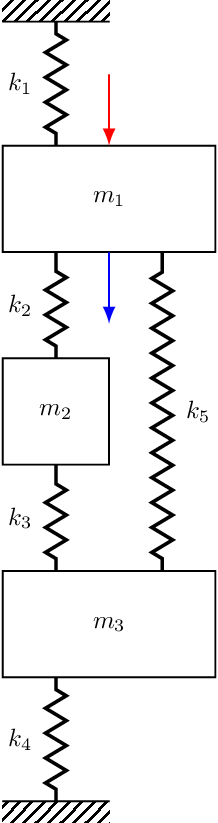
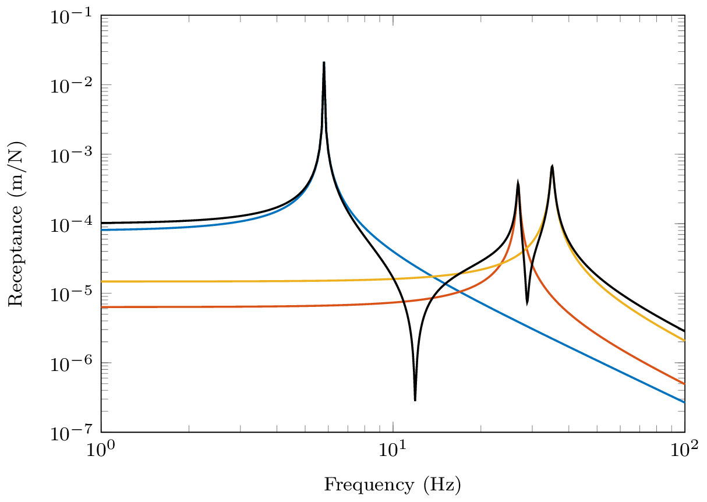
Lets move on to consider the receptance \(R_{12}\) with the excitation now applied to mass 2. \[ \mathbf{U} = \left[\begin{array}{ccc} \color{red}0.3237 &\color{red} \phantom{-}0.4240 & \color{red} -0.8458 \\ \color{blue}0.4102 & \color{blue} \phantom{-}0.4365 & \color{blue} \phantom{-}0.3758 \\ 0.4315 & -0.3826 & -0.0266 \end{array}\right] \] As before, we expect to see a resonance as \(\omega\rightarrow \omega_i\) and a single mode dominates. What about in between our resonances? Well, notice that our numerators are no-longer strictly positive, \[ {R}_{12}(\omega) = {\color{red}+} \frac{0.3237\times 0.4102 }{i\eta\omega_1^2+ (\omega_1^2 - \omega^2)} {\color{red}+} \frac{0.4240\times 0.4365}{i\eta\omega_2^2 + (\omega_2^2 - \omega^2)} {\color{blue}-} \frac{ 0.8458\times 0.3758\ }{i\eta\omega_3^2+ (\omega_3^2 - \omega^2)} \] The last modal contribution is accompanied by a \(-\)ve sign. This has the effect of flipping the phase of that mode, leading to the contribution of modes 2 and 3 no longer cancelling. Rather, they interfere constructively and we get an increase in the amplitude. This effect is clearly visible between \(\omega_2\) and \(\omega_3\) in Figure 7. In this case we no longer have an anti-resonance, just a minimum. In contrast, the positive numerators for modes 1 and 2 still provide an anti-resonance.
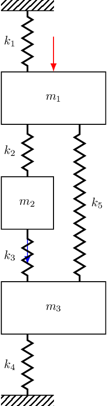
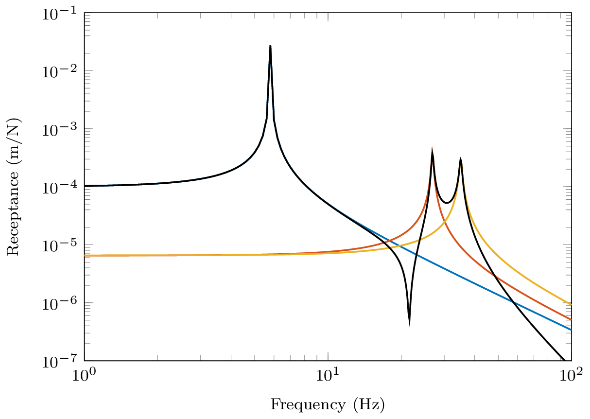
Finally, lets consider the receptance \(R_{13}\) where the exictation is now applied to mass 3.
\[ \mathbf{U} = \left[\begin{array}{ccc} \color{red}0.3237 &\color{red} \phantom{-}0.4240 & \color{red} -0.8458 \\ 0.4102 & \phantom{-}0.4365 & \phantom{-}0.3758 \\ \color{blue} 0.4315 & \color{blue}-0.3826 & \color{blue}-0.0266 \end{array}\right] \] Substituting in the corresponding mode shape values the receptance becomes, \[ {R}_{13}(\omega) = {\color{red}+} \frac{0.3237\times 0.4315 }{{\color{gray}i\eta\omega_1^2}+ (\omega_1^2 - \omega^2)} {\color{blue}-} \frac{0.4240\times 0.3826}{{\color{gray}i\eta\omega_2^2}+ (\omega_2^2 - \omega^2)} {\color{red}+} \frac{ 0.8458\times 0.0266 \ }{{\color{gray}i\eta\omega_3^2}+ (\omega_3^2 - \omega^2)} \] where it is noted that the 2nd modal contribution is now negative. Consequently, neither pairs of modes will interfere destructively, and between each resonance we will simply get a minimum.
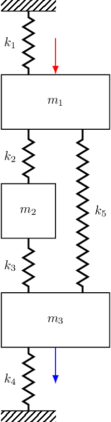
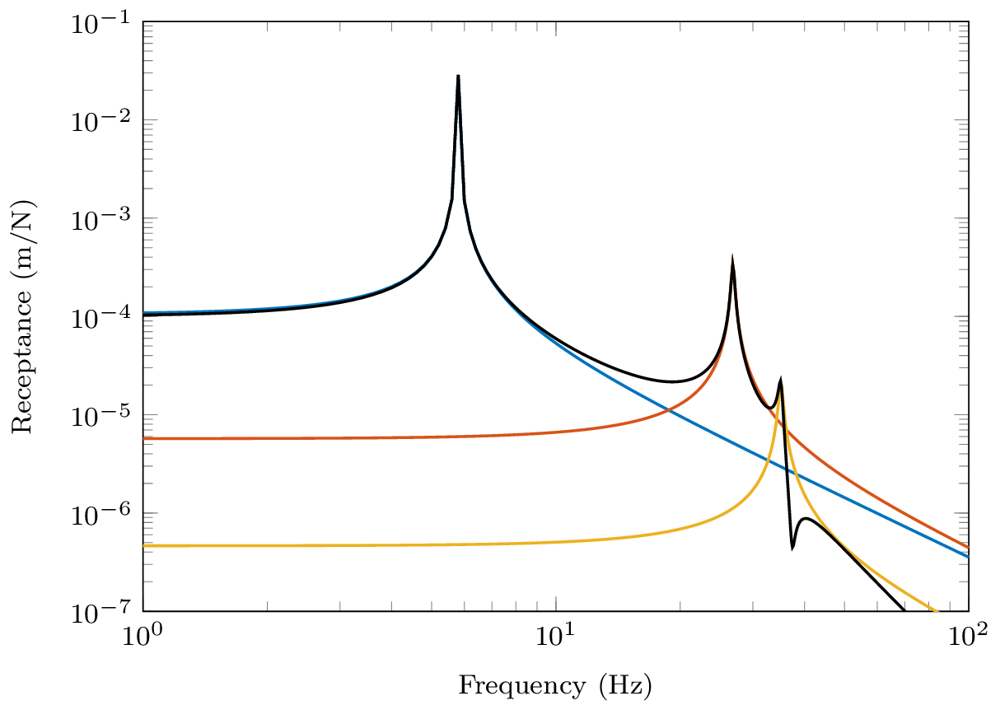
In summary of the above, we have just seen that it is the relative phase, or sign, of the neighboring modal contributions that dictates whether an anti-resonance occurs. Constructive interference between two modes will lead to a simple minimum, whilst destructive interference will yield an anti-resonance.
Examples
If you would like to see some examples of multi-DoF systems and their FRF have a look at the Synthesising FRF tutorial. There I show some FRFs for mass-spring and finite beam systems with both proportional and non-proportional damping.